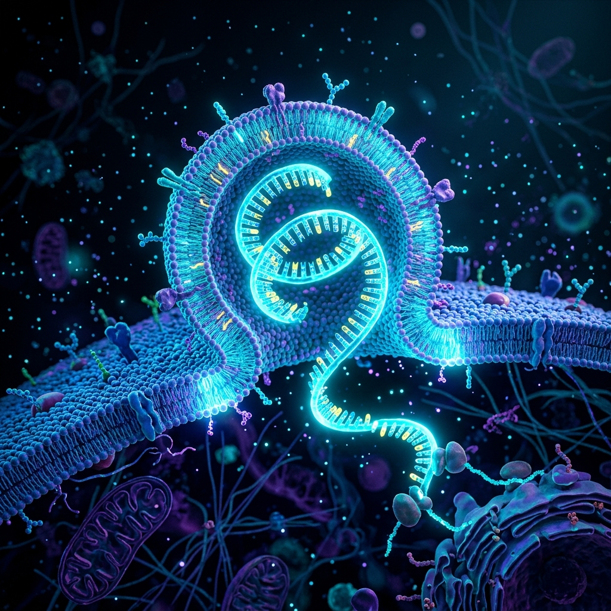
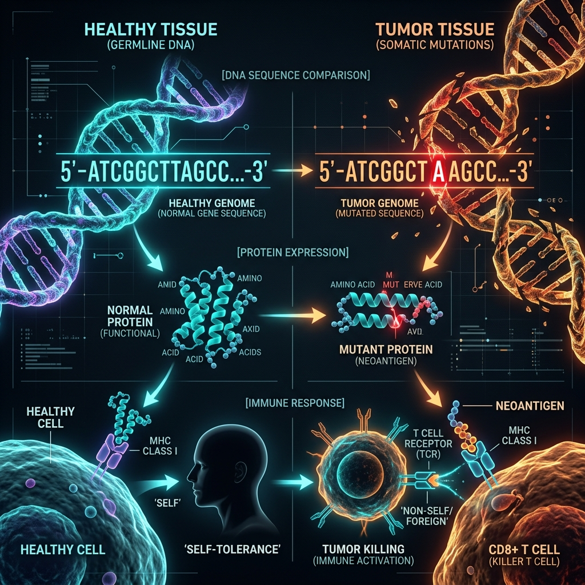
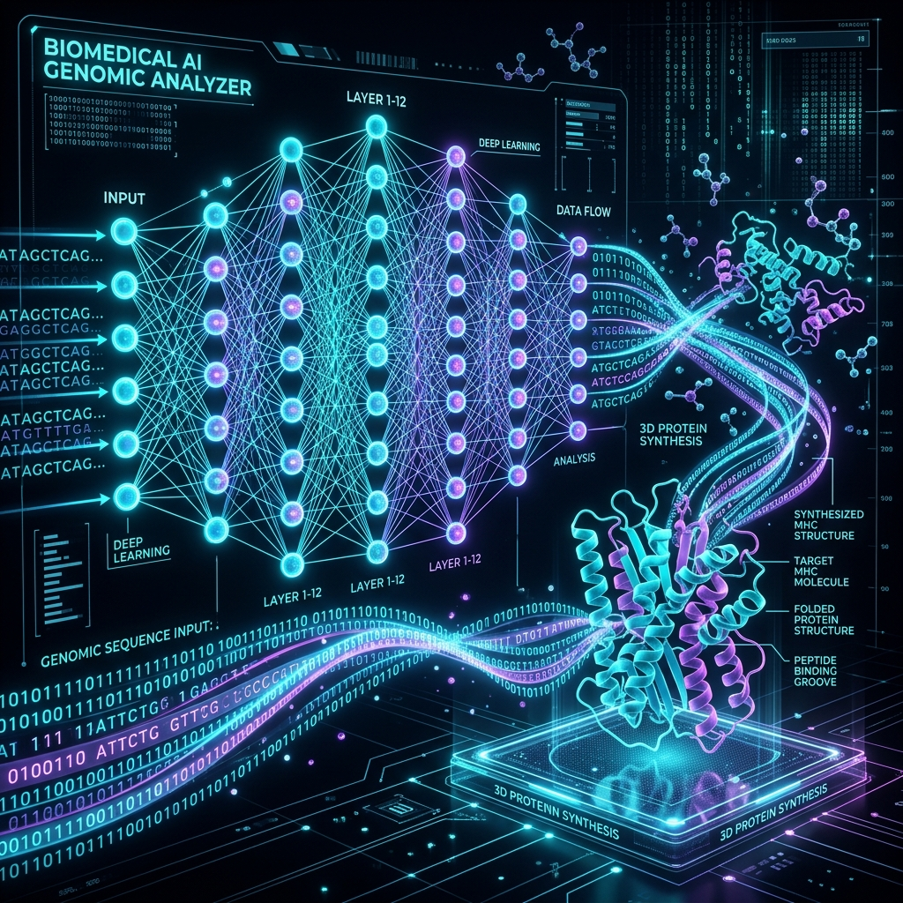
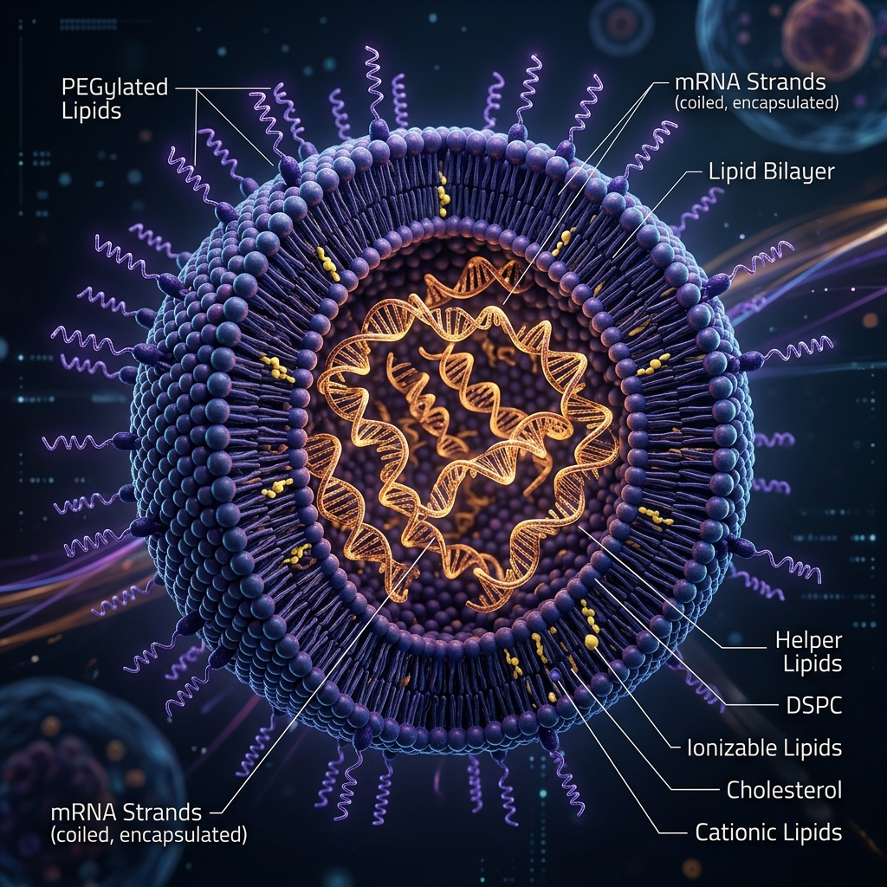
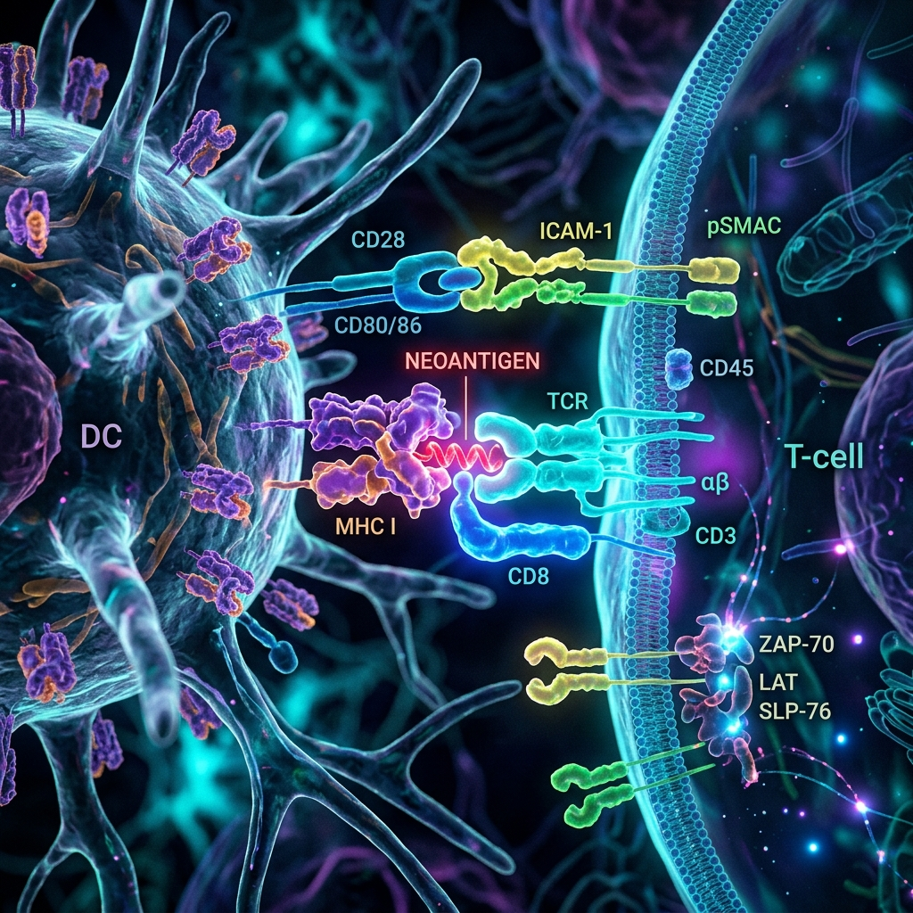

The cutting-edge of immuno-oncology: Training the immune system to recognize and destroy patient-specific tumor mutations.

We begin by performing Next-Generation Sequencing (NGS) on both the patient's tumor biopsy and healthy tissue. By comparing the two, we isolate somatic mutations unique to the cancer.

Not all mutations make good targets. We use advanced AI and machine learning models to predict which neoantigens will be successfully processed and presented on the patient's specific HLA alleles.

Once the top 10-30 neoantigens are selected, we synthesize the corresponding mRNA sequence. This "blueprint" is then encapsulated in Lipid Nanoparticles (LNPs) for stable delivery.

The vaccine is administered, training dendritic cells to present the neoantigens to Cytotoxic T-cells. This launches a precise, systemic attack against any cell expressing the target mutations.

Current leading approaches utilize customized mRNA encapsulated in LNPs, often combined with immune checkpoint inhibitors (like anti-PD-1) to overcome tumor microenvironment immunosuppression.
Ideal targets are clonal neoantigens (present in all tumor cells) with high MHC binding affinity and strong T-cell receptor (TCR) recognition capabilities.
Explore Major Targets →Major challenges include the turnaround time for manufacturing (vein-to-vein time), tumor heterogeneity, immuno-evasion tactics (e.g., HLA loss), and optimal delivery systems.
| Phase | Target Cancer | Approach | Status |
|---|---|---|---|
| Phase IIb | Melanoma (High-risk) | mRNA + Pembrolizumab | Active, Recruiting |
| Phase I | Pancreatic Ductal Adenocarcinoma | Individualized mRNA | Active |
| Phase I/II | Non-Small Cell Lung Cancer | Shared + Personalized Neoantigens | Recruiting |
Join our newsletter for the latest breakthroughs in immuno-oncology.